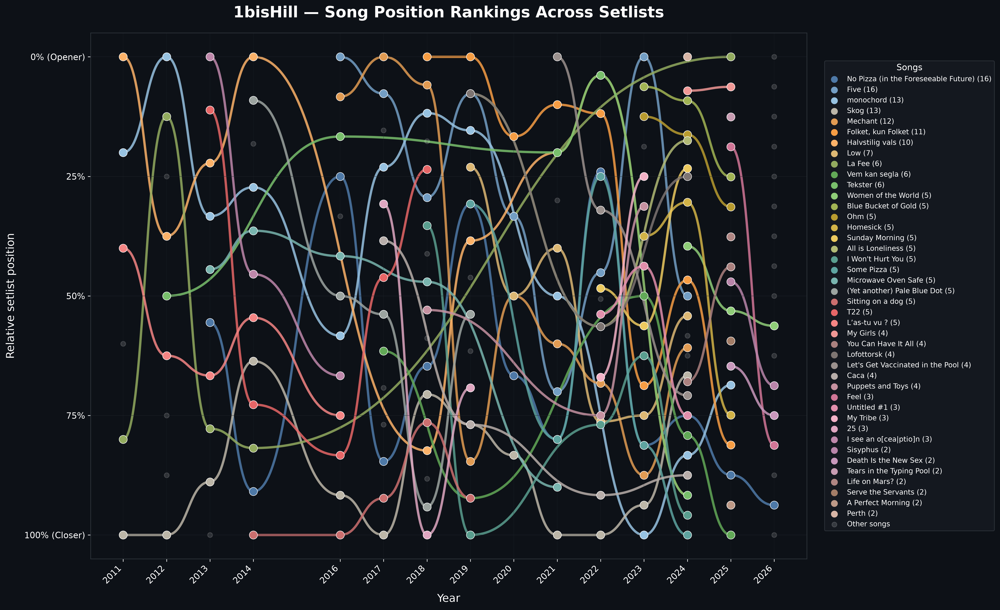

This bump plot visualizes the evolution of 1bisHill's setlists over time. It tracks the average position of songs across different years. Songs plotted at the top are played earlier in the show (e.g., openers), while songs at the bottom are played towards the end or during encores.

👆 Click the image to view the interactive chart, where you can isolate specific songs!